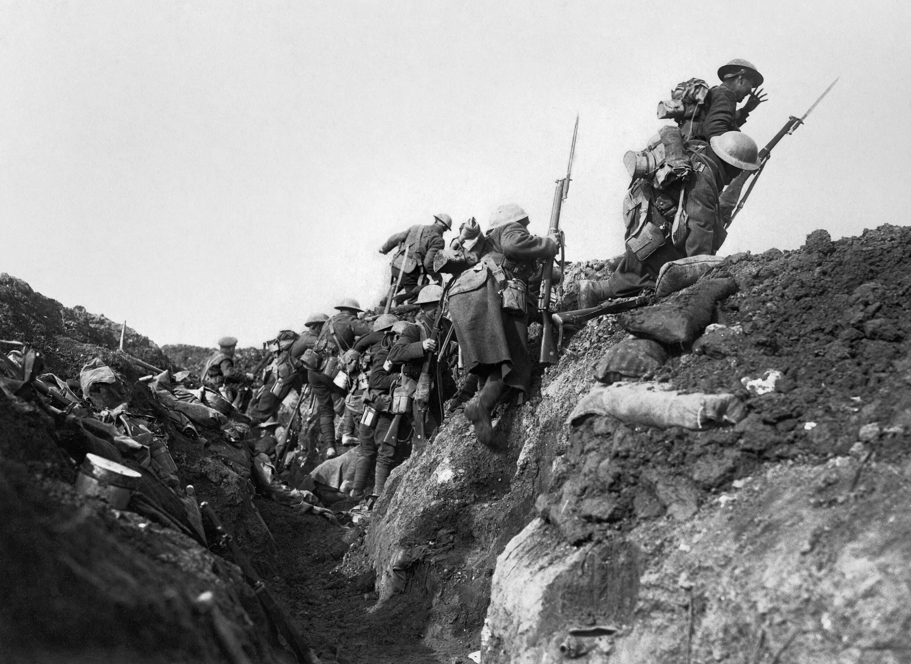
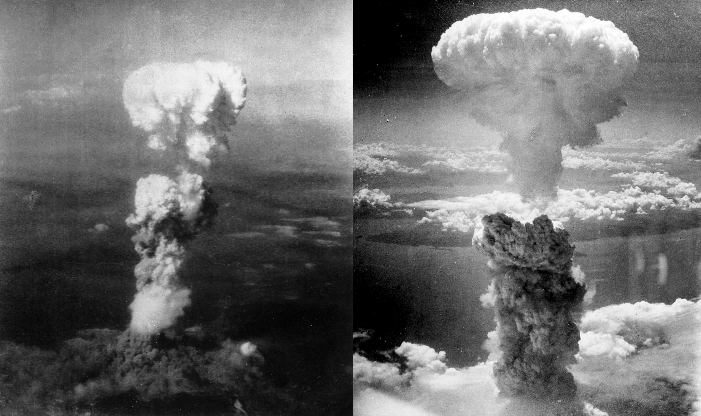
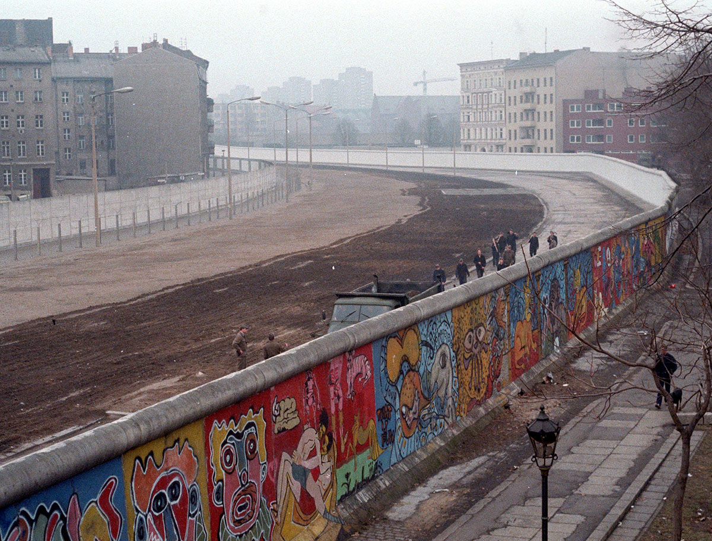

1. Η Αυτοκτονία της Ευρώπης: Ο Α΄ Παγκόσμιος Πόλεμος (1914–1918)
Στο 20ό μάθημα της σειράς (το πρώτο μέρος του μεγάλου τελικού κλεισίματος), η Μαρία Ευθυμίου εξετάζει τον πιο βίαιο, αιματηρό αλλά και τεχνολογικά εκρηκτικό αιώνα της ανθρώπινης ιστορίας: τον 20ό αιώνα.
Το καλοκαίρι του 1914, η Ευρώπη βρισκόταν στο απόγειο της ακμής της (Belle Époque). Όμως η δολοφονία του αρχιδούκα Φραγκίσκου Φερδινάνδου στο Σεράγεβο πυροδότησε το μοιραίο ντόμινο των συμμαχιών. Οι νέοι ξεκίνησαν για το μέτωπο τραγουδώντας, πεπεισμένοι ότι θα γύριζαν νικητές τα Χριστούγεννα!

Η έκβαση του πολέμου κρίθηκε από την είσοδο των ΗΠΑ (Απρίλιος 1917), μετά τον απεριόριστο υποβρύχιο πόλεμο των Γερμανών (βύθιση Λουζιτάνια) και το τηλεγράφημα Τσίμερμαν. Ο πρόεδρος Γούντροου Ουίλσον εισήγαγε τα περίφημα «14 Σημεία» για την αυτοδιάθεση των λαών και την ίδρυση της Κοινωνίας των Εθνών.
Στο τέλος του πολέμου, η καταπονημένη ανθρωπότητα χτυπήθηκε από την Ισπανική Γρίπη (1918–1920): μια σαρωτική πανδημία στελέχους H1N1 που μόλυνε το ένα τρίτο του παγκόσμιου πληθυσμού και εξόντωσε πάνω από 50 εκατομμύρια ανθρώπους —περισσότερους από όλες τις μάχες του Α΄ Παγκοσμίου Πολέμου μαζί.
«Ο Α΄ Παγκόσμιος Πόλεμος ήταν η απόλυτη αυτοκτονία της Ευρώπης! Μέχρι το 1914, η Ευρώπη ήταν ο αδιαφιλονίκητος κυρίαρχος του πλανήτη. Και μέσα σε τέσσερα χρόνια, τα πιο φωτισμένα, τα πιο καλλιεργημένα έθνη της Γης —η πατρίδα του Μπετόβεν, του Γκαίτε, του Βολταίρου και του Σαίξπηρ— έθαψαν μια ολόκληρη γενιά παιδιών μες στις λάσπες και στα χημικά αέρια! Και το χειρότερο απ' όλα; Η Συνθήκη των Βερσαλλιών του 1919 δεν έφερε ειρήνη· έσπειρε τους σπόρους για έναν ακόμη πιο τερατώδη πόλεμο είκοσι χρόνια αργότερα!»
2. Ο Μεσοπόλεμος, το Κραχ του 1929 & η Άνοδος του Ολοκληρωτισμού
Η κατάρρευση του Χρηματιστηρίου της Νέας Υόρκης τη «Μαύρη Τρίτη» του Οκτωβρίου 1929 παρέσυρε ολόκληρο τον πλανήτη στη Μεγάλη Ύφεση.
Στη Γερμανία, η εξαθλίωση και η ανεργία οδήγησαν τις μάζες στην αγκαλιά του Αδόλφου Χίτλερ και του Εθνικοσοσιαλισμού (1933). Ολοκληρωτικά καθεστώτα υποδούλωσαν το άτομο στην παντοδυναμία του Κράτους και της Φυλής, μετατρέποντας τον αντισημιτισμό σε επίσημη κρατική πολιτική.
Φασισμός, Ναζισμός & οι Ολυμπιακοί του 1936: Η Μαρία Ευθυμίου διακρίνει τον ιταλικό φασισμό (κρατικός πατερναλισμός, όπου ο Μουσολίνι εμφανιζόταν με τη φανέλα να χύνει ατσάλι και να θερίζει, κατασκεύασε τις Autostrade, έφερε το τρένο μέχρι το τελευταίο χωριό και ίδρυσε κατασκηνώσεις και κοινωνική ασφάλιση —εμπνέοντας τον Μεταξά στην ίδρυση του ΙΚΑ το 1937) από τον βιολογικό φυλετισμό του Χίτλερ. Στη Γερμανία, ο Χίτλερ ανέθεσε στον Φέρντιναντ Πόρσε (Porsche) τη δημιουργία του Volkswagen («Αυτοκίνητο του Λαού»), ενώ η λατρεία στο πρόσωπό του έφτασε σε σημείο οι πολίτες να μην πλένουν το χέρι τους που είχε αγγίξει ο Φύρερ. Στους Ολυμπιακούς του Βερολίνου το 1936 εγκαινιάστηκε η αφή και λαμπαδηδρομία της Ολυμπιακής Φλόγας από την Ολυμπία (3.000 δρομείς), η τιμητική παρέλαση της Ελλάδας πρώτης, αλλά και τεχνολογικές πρωτιές: 25 γιγαντοοθόνες κλειστής τηλεόρασης, ραδιόφωνο σε 41 χώρες, το πρώτο γερμανικό photo-finish και τα πρωτοποριακά πλάνα της Λένι Ρίφενσταλ.
Το Ψυχολογικό Ρήγμα: Διεθνισμός vs «Πάνω απ' όλα η Πατρίδα» & οι Εύθραυστες Δημοκρατίες: Ο κομμουνισμός διακήρυσσε με πάθος ότι «οι εργάτες δεν έχουν πατρίδα, όλοι μαζί για την παγκόσμια επανάσταση». Όμως για εκατομμύρια ανθρώπους στην Πολωνία, τις χώρες της Βαλτικής, την Τσεχοσλοβακία, την Αυστρία, την Ουγγαρία και τα Βαλκάνια, η εθνική ανεξαρτησία είχε κερδηθεί μόλις το 1918 μετά από αιώνες σκλαβιάς —πώς να απαρνηθούν την πατρίδα που μόλις απέκτησαν και την πονούσαν; Επάνω σε αυτό το ψυχολογικό ρήγμα πάτησαν ο φασισμός και ο ναζισμός: «Θα μοιράσουμε τον πλούτο δίκαια, αλλά πάνω απ' όλα η Πατρίδα!». Παράλληλα, όπως τονίζει η ιστορικός, η δημοκρατία άντεξε μόνο στη Βρετανία, τη Γαλλία, την Ολλανδία και τη Σκανδιναβία που είχαν βαθιές θεσμικές ρίζες αιώνων· αντίθετα, όλες οι «νεογέννητες» δημοκρατίες του 1919 χωρίς ιστορική παράδοση κατέρρευσαν ταχύτατα σε αυταρχικές δικτατορίες.
3. Β΄ Παγκόσμιος Πόλεμος, Ολοκαύτωμα, Χιροσίμα & η Δίκη της Νυρεμβέργης
Ο Β΄ Παγκόσμιος Πόλεμος (1939–1945) υπήρξε η πιο καταστροφική σύγκρουση στην ανθρώπινη ιστορία, με πάνω από 75 εκατομμύρια νεκρούς.

Δύο ορόσημα σημάδεψαν αμετάκλητα τον αιώνα:
- Το Ολοκαύτωμα (Shoah): Η ψυχρή, βιομηχανική εξόντωση 6 εκατομμυρίων Εβραίων και εκατοντάδων χιλιάδων Ρομά στα ναζιστικά στρατόπεδα θανάτου (Άουσβιτς-Μπιρκενάου) —το απόλυτο ναδίρ του ανθρώπινου πολιτισμού.
- Οι Ατομικές Βόμβες (Χιροσίμα & Ναγκασάκι, 1945): Η αυγή της Πυρηνικής Εποχής, όπου η επιστήμη προσέφερε στον άνθρωπο τη δυνατότητα της οριστικής αυτοκαταστροφής.
Μετά την κατάρρευση του Γ΄ Ράιχ, η Δίκη της Νυρεμβέργης (1945–1946) έθεσε για πρώτη φορά στην ιστορία τους ηγέτες ενός κράτους ενώπιον Διεθνούς Στρατιωτικού Δικαστηρίου, εισάγοντας στο παγκόσμιο δίκαιο τις έννοιες των «Εγκλημάτων κατά της Ανθρωπότητας» και της «Γενοκτονίας» και καταργώντας το άλλοθι των «ανώτερων διαταγών».
«Το Άουσβιτς και η Χιροσίμα είναι τα δύο ορόσημα που άλλαξαν για πάντα τη σχέση του ανθρώπου με τον εαυτό του. Στο Άουσβιτς είδαμε ότι η επιστήμη, η οργάνωση και η γραφειοκρατία μπορούν να χρησιμοποιηθούν για την πιο απόλυτη, σατανική βαρβαρότητα. Και στη Χιροσίμα συνειδητοποιήσαμε ότι παίζουμε με τη φωτιά των θεών. Από το 1945 και μετά, η επιβίωση του είδους μας δεν εξαρτάται πλέον από τη φύση, αλλά από τη δική μας αυτοσυγκράτηση!»
4. Η Μεταπολεμική Εποχή: Αποαποικιοποίηση, Ψυχρός Πόλεμος & Ευρωπαϊκή Ένωση
Στον απόηχο του 1945, η ανθρωπότητα αναδιοργανώθηκε σε τρεις μεγάλους άξονες:
1. Η Μεγάλη Αποαποικιοποίηση
Οι εξαντλημένες ευρωπαϊκές αυτοκρατορίες (Βρετανία, Γαλλία, Ολλανδία) δεν μπορούσαν πλέον να διατηρήσουν τις υπερπόντιες κτήσεις τους:
- Η Ινδία κέρδισε την ανεξαρτησία της το 1947 υπό την ηγεσία του Μαχάτμα Γκάντι και τη φιλοσοφία της μη-βίας (Satyagraha), αν και η οδυνηρή διχοτόμηση (Partition) με το Πακιστάν οδήγησε σε εκατόμβες νεκρών και εκατομμύρια πρόσφυγες.
- Στην Αφρική και την Ασία, δεκάδες νέα ανεξάρτητα έθνη αναδύθηκαν, διαμορφώνοντας τον λεγόμενο «Τρίτο Κόσμο» (Κίνημα των Αδεσμεύτων, Διάσκεψη του Μπαντούνγκ 1955).
2. Ο Ψυχρός Πόλεμος & η Ισορροπία του Τρόμου
Ο πλανήτης χωρίστηκε σε δύο αντίπαλα πυρηνικά στρατόπεδα: τις ΗΠΑ (ΝΑΤΟ) και την ΕΣΣΔ (Σύμφωνο της Βαρσοβίας). Η Αμοιβαία Εξασφαλισμένη Καταστροφή (MAD) απέτρεψε έναν Γ΄ Παγκόσμιο Πόλεμο, αλλά οδήγησε σε αιματηρούς περιφερειακούς πολέμους δι' αντιπροσώπων (proxy wars) στην Κορέα, το Βιετνάμ, τη Μέση Ανατολή και το Αφγανιστάν.
3. Το Θαύμα της Ευρωπαϊκής Ενοποίησης
Στην καθημαγμένη Ευρώπη, οραματιστές ηγέτες (Ρομπέρ Σουμάν, Ζαν Μονέ, Κόνραντ Αντενάουερ) πέτυχαν το αδιανόητο: ένωσαν τη γαλλογερμανική παραγωγή άνθρακα και χάλυβα (ΕΚΑΧ, 1951) και έθεσαν τα θεμέλια της Ευρωπαϊκής Οικονομικής Κοινότητας (Συνθήκη της Ρώμης, 1957). Οι προαιώνιοι εχθροί έγιναν εταίροι, εγκαινιάζοντας τη μακροβιότερη περίοδο ειρήνης και ευημερίας στην ευρωπαϊκή ιστορία.
«Κοιτάξτε να δείτε το θαύμα της Ευρωπαϊκής Ένωσης: αυτοί οι λαοί —οι Γάλλοι και οι Γερμανοί— πολεμούσαν μεταξύ τους επί χίλια χρόνια! Είχαν γεμίσει την ήπειρο νεκροταφεία και ορφανά. Και μετά το 1945 κάθισαν στο ίδιο τραπέζι δύο γέροντες πολιτικοί, ο Σουμάν και ο Αντενάουερ, και είπαν: "Φτάνει πια το αίμα!". Και ένωσαν τα σύνορά τους, την οικονομία τους, τη μοίρα τους. Είναι το πιο μεγαλειώδες πείραμα ειρήνης στην ιστορία της ανθρωπότητας, κι ας το γκρινιάζουμε καμιά φορά για τη γραφειοκρατία των Βρυξελλών!»
5. Ο Κόσμος Σήμερα: Παγκοσμιοποίηση, Ψηφιακή Επανάσταση & οι Νέες Προκλήσεις

Με την πτώση του Τείχους του Βερολίνου (1989) και τη διάλυση της ΕΣΣΔ (1991), ξεκίνησε η εποχή της ανεξέλεγκτης Παγκοσμιοποίησης:
- Η Ψηφιακή Επανάσταση: Υπολογιστές, Διαδίκτυο, έξυπνα τηλέφωνα και τεχνητή νοημοσύνη έχουν ενώσει οκτώ δισεκατομμύρια ανθρώπους σε ένα ενιαίο παγκόσμιο δίκτυο στιγμιαίας πληροφόρησης.
- Οι Μεγάλες Προκλήσεις του 21ου Αιώνα:
- Η Κλιματική Κρίση και η υπερθέρμανση του πλανήτη ως αποτέλεσμα δύο αιώνων καύσης ορυκτών καυσίμων.
- Οι νέες γεωπολιτικές εντάσεις και η επάνοδος του αυταρχισμού.
- Η ασύλληπτη πρόοδος της βιοτεχνολογίας και της τεχνητής νοημοσύνης, που θέτουν για πρώτη φορά ερωτήματα για το ίδιο το μέλλον της ανθρώπινης υπόστασης.
6. Συνοπτικός Πίνακας: Οι Μεγάλες Τομές του 20ού Αιώνα
| Περίοδος | Κομβικό Γεγονός | Ιστορικός Αντίκτυπος |
|---|---|---|
| 1914–1918 | Α΄ Παγκόσμιος Πόλεμος & Έξοδος ΗΠΑ (1917) | 20 εκατ. νεκροί, πτώση 4 αυτοκρατοριών, 14 Σημεία Ουίλσον |
| 1918–1920 | Πανδημία Ισπανικής Γρίπης | 50+ εκατ. νεκροί παγκοσμίως (H1N1) |
| 1929–1933 | Μεγάλη Ύφεση & Άνοδος Χίτλερ | Κατάρρευση δημοκρατιών, εθνικιστικός φανατισμός |
| 1939–1945 | Β΄ Παγκόσμιος Πόλεμος | 75+ εκατ. νεκροί, Ολοκαύτωμα, Χιροσίμα (Ατομική Εποχή) |
| 1945–1946 | Δίκη της Νυρεμβέργης | Καθιέρωση Εγκλημάτων κατά της Ανθρωπότητας & Γενοκτονίας |
| 1947–1960s | Αποαποικιοποίηση | Ανεξαρτησία Ινδίας και Αφρικής – Τέλος ευρωπαϊκών αυτοκρατοριών |
| 1989 / 1991 | Πτώση Τείχους Βερολίνου & ΕΣΣΔ | Τέλος Ψυχρού Πολέμου – Παγκοσμιοποίηση και Ψηφιακή Επανάσταση |